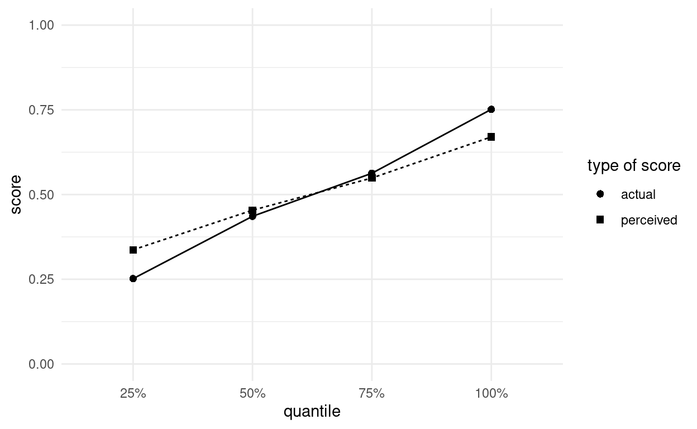
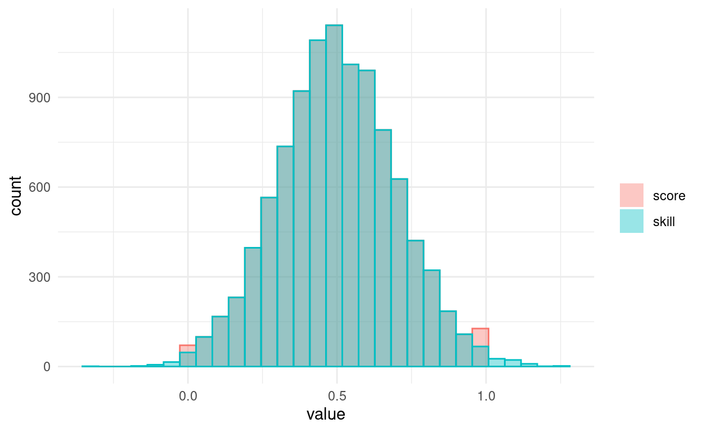
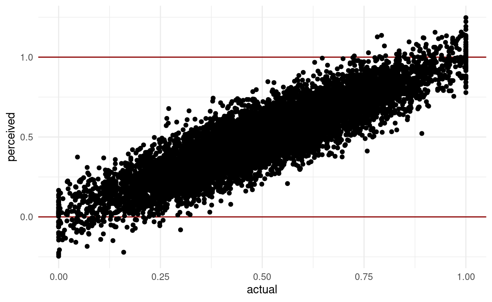
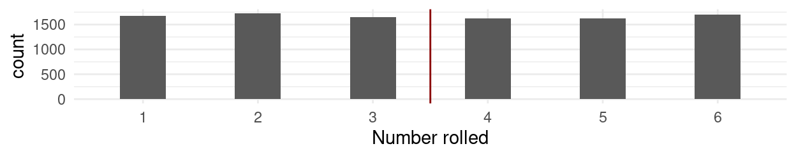
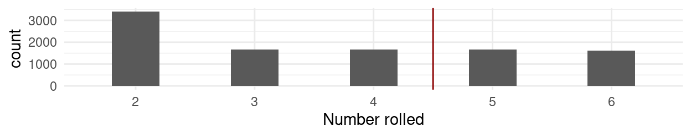
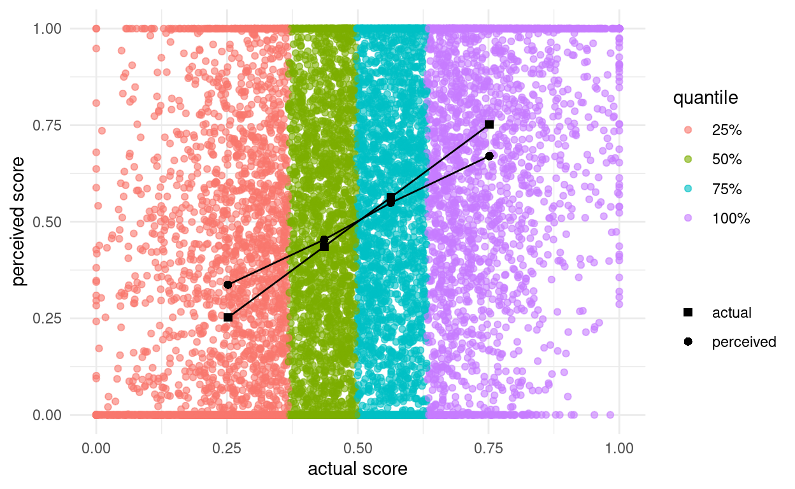
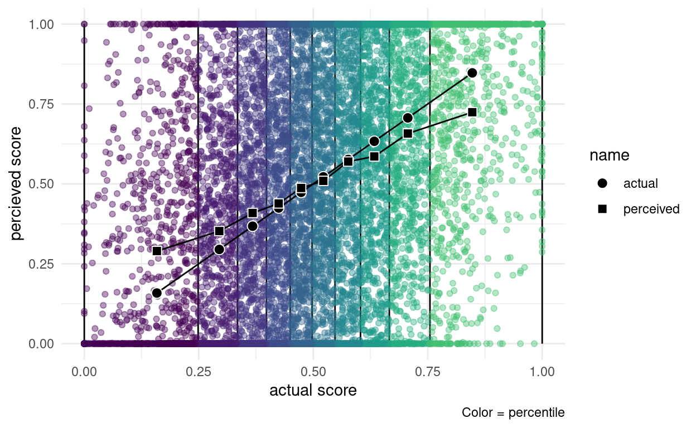
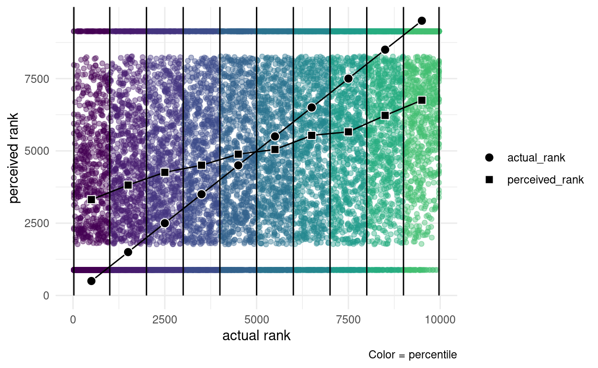

Explaining cut-off effects through examples.
library(tidyverse)
theme_set(theme_minimal())
in_range <- function(x, lower, upper) {
case_when(
x > upper ~ upper,
x < lower ~ lower,
TRUE ~ x
)
}
n = 10000
uncertainty = 0.5
sim <- crossing(
participant = 1:n
) %>%
mutate(
ability = rnorm(n(), 0.5, sd = 0.20),
actual = ability %>% in_range(0, 1),
perceived = (actual + rnorm(n(), 0, uncertainty)) %>% in_range(0, 1)
)
sim_quantiles <- sim %>%
summarise(
quantile_breaks = quantile(actual),
quantile = names(quantile_breaks),
percieved_quantile_breaks = quantile(perceived),
percieved_quantile = names(percieved_quantile_breaks)
)
sim <- sim %>%
mutate(
actual_q = cut(actual,
breaks = sim_quantiles$quantile_breaks,
labels = sim_quantiles$quantile[-1],
include.lowest = TRUE),
perceived_q = cut(perceived,
breaks = sim_quantiles$percieved_quantile_breaks,
labels = sim_quantiles$percieved_quantile[-1],
include.lowest = TRUE)
)
sim_q_summary <- sim %>%
group_by(actual_q) %>%
summarise(across(c(actual, perceived),
mean)) %>%
mutate(quartile_mean = actual) %>%
pivot_longer(c(actual, perceived))
I recently came across this article by Jonathan Jarry (“The Dunning-Kruger Effect Is Probably Not Real” n.d.).
I am not going to try and steal his thunder, so please do go ahead and read the article. It is well written, thoroughly researched and presents a valid point. Everything points towards the Dunning-Krueger effect being largely just an artifact of the way the original authors analyzed their data. Where I felt the article was lacking is in providing the somewhat statistical explanation of why this happens. This is why I settled on the current title of this post. In the following I am going to explain from basic principles why the results that Dunning and Krueger got in their experiments can largely be explained without any effect being present. Of course I am going to do so using the statistical programming language R and if you want to try out the code yourself feel free to click on the little GitHub icon in the top right corner to get sent to the source. You will find this article in the _posts folder. Or use the little + buttons to expand code sections.
Like the author of the article, I wanted the effect to be real. It just sounded to logical not to be real. After all, even the title of the original paper makes intuitive sense: “Unskilled and Unaware. How Difficulties in Recognizing One’s Own Incompetence Lead to Inflated Self-Assessments” (Kruger and Dunning 1999). And it feels so right that the skills required for an accurate self-assessment would be linked to the skills required for the actual task. Now, this is not completely wrong. Later studies also found that experts are better at predicting their scores than lesser skilled participants (and so are women compared to men, by the way) (Nuhfer et al. 2017). But what they didn’t find was the directionality claimed by Dunning and Krueger, where lesser skilled participants are supposedly more likely to be overconfident while higher skilled participants tended to rather underestimate their skills. Let’s dive into some numbers to see, how this misconception arises.
sim_q_summary %>%
ggplot(aes(actual_q, value, lty = name, shape = name, group = name)) +
geom_point(data = sim_q_summary, color = "black", size = 2) +
geom_line(data = sim_q_summary, color = "black", show.legend = FALSE) +
scale_shape_manual(values = c(16, 15)) +
scale_y_continuous(limits = c(0,1)) +
labs(x = "quantile",
y = "score",
shape = "type of score")

This is what most plots in the original paper by Dunning and Krueger look like. And it looks very convincing at first glance. The dots representing the actual scores of participants in a test are lower than the scores that participants estimated (squares) in the case of lower-scoring participants and the effect is reversed for higher-scoring participants. But what is actually shown here?
Firstly, we must note that these 8 dots are summaries of many dots. And I always tell my students to be extra careful when someone only shows summaries and not the raw data behind those summaries. But what kind of summaries are we dealing with here? Dunning and Krueger hat a total of 87 participants, which where all psychology undergraduate students (We can talk about this selection bias another time, because we have a bigger problem at hand). The original x-axis read “Bottom Quartile, 2nd Quartile, 3rd Quartile and Top Quartile,” which I replaced with percentages. I did so, because these so called quartiles are special cases of so called quantiles. And we are going to explore what those are now. There might already be one such quantile that you are familiar with: The median.
The median is the datapoint where half of all the other values are lower and the other half is higher.
Generally, quantiles are any number of points that divide your datapoints into equally sized pieces. If you get 4 of those pieces, they are called quartiles. The first quartile is the point such that one quarter, or 25% of datapoints, are smaller than that point. By that logic, the median can have many names. It could also be called the 2nd quartile or the 50th percentile. I chose the general notion of quantile and used percentages as labels because the problem we are about to uncover is a general problem, not just a problem of quartiles. As we will later show, it will also appear if we use infinitely small pieces to divide our data with, so it is not a “binning problem” as I initially thought when I read that they summarized within the quartiles. Speaking of summarizing, let’s look into what happened to our raw datapoints.
Now, Dunning and Krueger only had 87 participants. But we are on a computer and we can simulate as many participants as we want, so let’s start with 10’000! This will also help to show that the problem is intrinsic to the way the data is summarized and not just a sample-size issue. We will talk about the raw data and then make our way to the plot above.
Imagine we have all 10’000 participants take part in a test. The lowest score they can achieve is 0 and the highest is 1. Let us also assume that all the participants have some sort of skill, which we are trying to measure with the test. It is important to note here that this makes our test just a proxy for this skill. And it is a limited proxy. Even if we leave aside that the performance of any individual can vary from day to day (we are sort of making up for that by testing a lot of people), there is still a fundamental limit in our scoring. The lowest score you can get is 0, even though among those that will score a 0, some will be higher and some lower skilled than their peers, and still they all have the same score. The same goes for a score of 1. If we are the highest skilled participant, we would get a score of 1, but other participants that are less skilled would also get a 1. So the actual skill-distribution might be wider than our score distribution between 0 and 1.
sim %>%
select(skill = ability, score = actual) %>%
pivot_longer(everything()) %>%
ggplot(aes(value, fill = name, color = name)) +
geom_histogram(position = "identity", alpha = 0.4) +
labs(fill = "") +
guides(color = "none")

This cutoff means that we are getting more 0s and 1s than the other scores. At this point this might not actually be a problem and it really depends on how much the skills and achievable scores are spread out, but it will be a much bigger problem once we ask participants for their self assessment. Because self assessments can vary a lot.
Imagine this: For every score that a participant gets, it is equally likely that he or she has a higher or lower self-assessment:
sim %>%
mutate(
perceived = actual + rnorm(n(), 0, uncertainty / 5)
) %>%
ggplot(aes(actual, perceived)) +
geom_hline(yintercept = c(0, 1), color = "darkred") +
geom_point()

“Hang on!” you say: “there are some illegal scores in there!” And you are correct. Because we can get scores lower than 0 and lower than 1, the self-assessment can’t have those as well. After all, who would think that they got 120% in a test? Or a score of -0.3 where 0 is the lowest possible score? And this is the crux.
Those participants will be forced to apply a cutoff to their self-assessment so that it lies within 0 and 1. Crucially, when participants are equally likely to over or underestimate their skill, those whose actual skill is low are more likely to run into the cutoff on the lower end. Those whose actual skill is high will run into the cutoff on the upper end more often. This means that on the lower end of the skill spectrum, we are getting more self assessed scores that are 0, but would have been lower than that (e.g. -0.3) and on the other end we are getting more self assessed scores that are 1 but could have been higher than that if the scales allowed it. When we now summarize those values by first separating them into equally sized slices (the quantiles) and then calculating the mean (= the average) of all the points within those slices, something interesting happens.
Imagine rolling a die and calculating the average.

The average of the numbers rolled will be close to 3.5. Now, what would happen, when every time you rolled a 1, you would write down 2 instead? Of course, the average would increase!

And the same happens on both ends of the skill-assessments and scores, just in opposite directions. So let’s look at the raw numbers behind the plot I initially showed you.
The dark points and lines are the familiar averages just like in the original Dunning and Krueger plot. But now we can also inspect the individual scores and self-assessed scores. The individual points are colored by the quartile to which they belong.
sim %>%
ggplot(aes(actual, perceived, color = actual_q)) +
geom_point(alpha = 0.6) +
geom_point(data = sim_q_summary, aes(quartile_mean, value,
shape = name,
group = name), color = "black", size = 2) +
geom_line(data = sim_q_summary, aes(quartile_mean, value,
group = name), color = "black") +
scale_shape_manual(values = c(15, 16)) +
scale_y_continuous(limits = c(0,1)) +
labs(shape = "",
color = "quantile",
x = "actual score",
y = "perceived score")

Now we see the cut-off in full effect. And it doesn’t even matter that we used quartiles, any number of quantiles would have done. The size of this effect only depends on the spread of the self-assessments, which is usually quite large.
For example, if you use 10 quantiles, we can still observe the effect.
sim_quantiles <- sim %>%
summarise(
quantile_breaks = quantile(actual, probs = seq(0, 1, 0.1)),
quantile = names(quantile_breaks)
)
sim <- sim %>%
mutate(
actual_q = cut(actual,
breaks = sim_quantiles$quantile_breaks,
labels = sim_quantiles$quantile[-1],
include.lowest = TRUE)
)
sim_q_summary <- sim %>%
group_by(actual_q) %>%
summarise(across(c(actual, perceived),
mean)) %>%
mutate(quartile_mean = actual) %>%
pivot_longer(c(actual, perceived))
sim %>%
ggplot(aes(actual, perceived, color = actual_q)) +
geom_segment(data = sim_quantiles, aes(x = quantile_breaks,
xend = quantile_breaks,
y = 0,
yend = 1),
inherit.aes = FALSE) +
geom_point(alpha = 0.4) +
geom_line(data = sim_q_summary, aes(quartile_mean, value,
group = name), color = "black") +
geom_point(data = sim_q_summary, aes(quartile_mean, value,
shape = name,
group = name),
color = "white",
fill = "black",
size = 3
) +
scale_shape_manual(values = c(21, 22)) +
scale_color_viridis_d(end = 0.7) +
labs(
x = "actual score",
y = "percieved score",
caption = "Color = percentile"
) +
guides(color = "none")

There is one more thing to take care of. In my plots I used the actual and the perceived scores on the axis, whereas Dunning and Krueger actually used quantiles on both axis. We can show that the effect is independent of how many quantiles we take and still holds up if we use quantiles for the perceived scores by transitioning to the most general notion of what a quantile does. A rank captures the essential idea behind a quantile, without having to decide on the number of quantiles. The rank of a value is just the number of values that are below that value. For example, the average house mouse has a body length of about 8 centimeters, the average human male is 171 and the average human female is 159 cm tall while an average giraffe is 500 cm tall. The rank of those values is the order of those vales:
mouse human male human female giraffe
1 3 2 4 If we use this rank procedure to transform the actual and perceived scores, this is what we end up with:
sim_rank_mean <- sim %>%
mutate(
actual_rank = rank(actual),
perceived_rank = rank(perceived)
) %>%
group_by(actual_q) %>%
summarise(
actual_rank = mean(actual_rank),
perceived_rank = mean(perceived_rank)
) %>%
mutate(quartile_rank = actual_rank) %>%
pivot_longer(c(perceived_rank, actual_rank))
sim_quantiles <- sim %>%
summarise(
quantile_breaks = quantile(rank(actual), probs = seq(0, 1, 0.1)),
quantile = names(quantile_breaks)
)
sim %>%
mutate(
actual_rank = rank(actual),
perceived_rank = rank(perceived)
) %>%
ggplot(aes(actual_rank, perceived_rank, fill = actual_q)) +
geom_point(aes(color = actual_q), alpha = 0.4) +
geom_segment(data = sim_quantiles, aes(x = quantile_breaks,
xend = quantile_breaks,
y = 0,
yend = Inf),
inherit.aes = FALSE) +
geom_line(data = sim_rank_mean, aes(quartile_rank, value,
group = name), color = "black") +
geom_point(data = sim_rank_mean, aes(quartile_rank, value,
shape = name,
group = name),
color = "white", size = 3, fill = "black") +
scale_shape_manual(values = c(21, 22)) +
scale_color_viridis_d(end = 0.7) +
labs(shape = "",
caption = "Color = percentile",
x = "actual rank",
y = "perceived rank") +
guides(color = "none", fill = "none")
